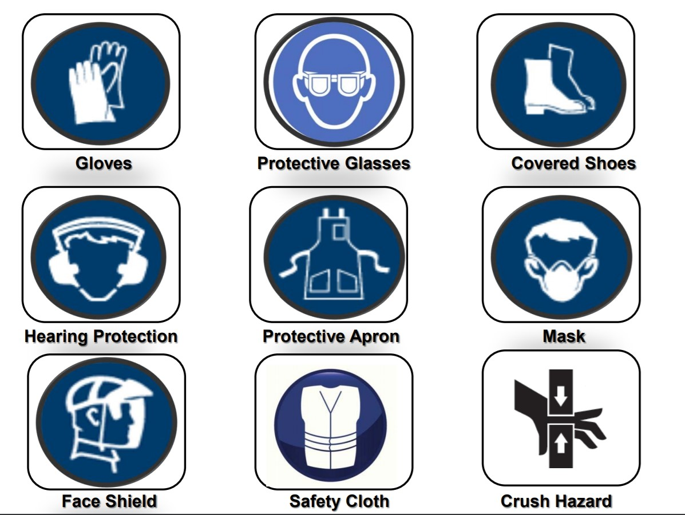
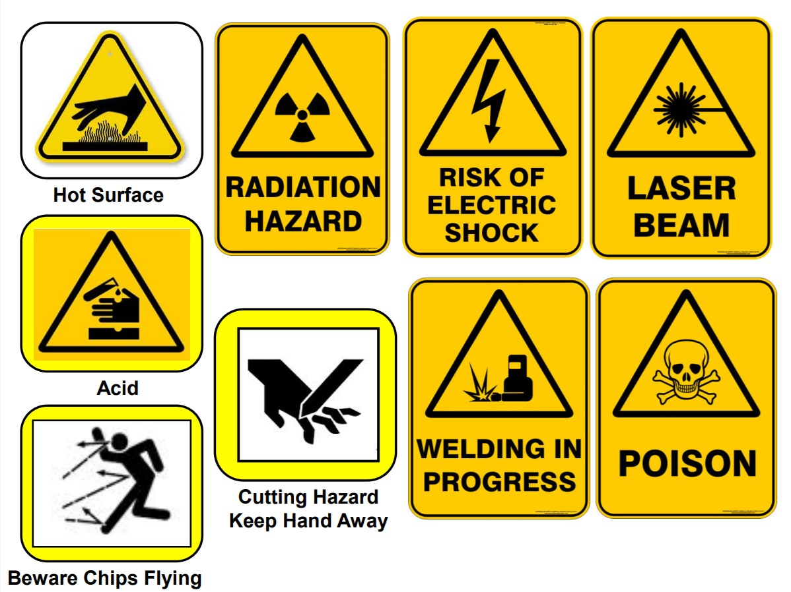
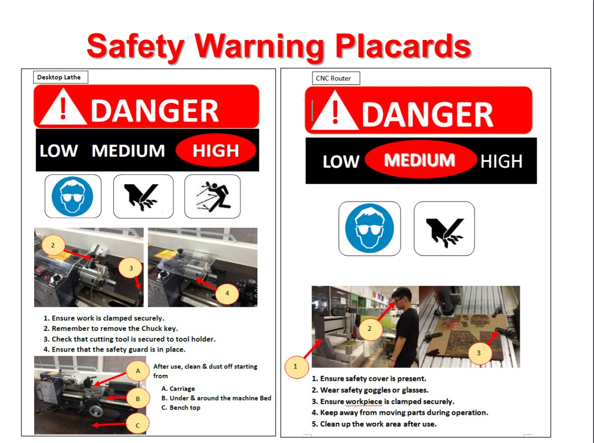
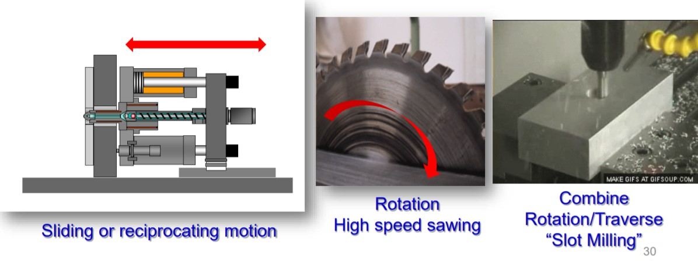

Fablab Safety
Emergency Procedures
Numbers to call in the event of emergency:- For Ambulance/SCDF call 995
- For Police call 999
- For all emergencies & incident reporting call SP Emergency hotline 6772-1234
Precise information to provide:
- Name of caller
- Location (block and room number)
- Nature of emergency e.g. fire, explosion, violent or abusive behaviour, etc.
Things to take note of:
- Report all work related injuries, no matter how minor, promptly to technical support staff or supervising staff.
- Contact the school’s general office, 67721206 or call 67721234 when treatment to injury is required.
- Do not leave injury unattended or without treatment.
Workshop Safety
Proper attire:- Long hair must be tied up
- Keep adornment properly
- No loose items allowed (Hanging necklace)
- T-shirt, No loose attire, No long sleeve
- Hands must be free of adornment
- Long pant
- Covered shoes
Safety icons to look out for
 Make sure to read the placards before using the machines 
Hazards with machinery
There are three primary areas at a machine where hazards can be encountered.- The machine's "perimeter"
Area around a machine, where falling objects, flying debris or other hazards can be encountered - The "drive train"
The moving parts that run the machine - "Points of operation"
Location where a machine's mechanical or electrical energy is used to cut, bend or otherwise process materials
All equipment or machine operates using a combination of THREE basic motions:
- Rotation - moving in a circular pattern.
- Sliding/Reciprocation - moving back and forth
- Traverse motion - moving in a straight line 